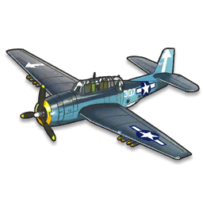

TBF Avenger

- Thiết kế bởi Grumman Aircraft Engineering Corporation.
- Thiết kế cho 1 đội bay 3 người.
- Chiều dài: 12.19 m
- Sải cánh: 16.51 m
- Chiều cao: 5.00 m
- Diện tích bề mặt cánh: 46.00 m2
- Trọng lượng (không tải): 4,918 kg
- Động cơ Wright R-2600-8 Twin Cyclone 14 xy lanh, với công suất 1,700 mã lực.
Back to Home